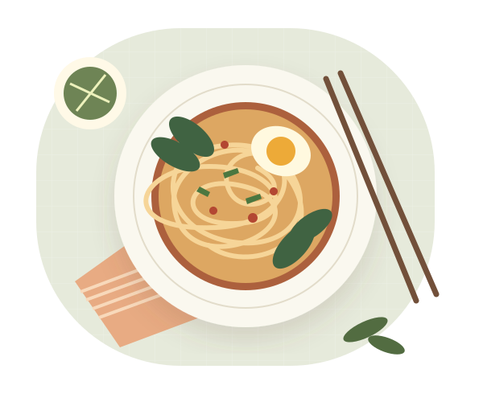

Good food. Wherever you are.
Your next
delicious discovery.
Little cafés, comforting bowls, and places worth a detour. Find a seat at your next favorite spot.
Free to explore. No account needed.

✦ Follow your appetite.Find food nearby
Where would you like to eat?
1 · Choose your location & distance
2 · Filter the loaded places
A few good places to start
Preparing your food guide…
Map tiles load from OpenStreetMap when you open this view. Markers show up to 100 filtered places.
A starting point, not a complete city directory. Area loads use your chosen radius (3–100 miles), up to 2,000 mapped records. Large areas may be incomplete; the capped collection is not guaranteed to contain the nearest 2,000 places. Food, name and cuisine filters search only the loaded collection. Distances are straight-line estimates. Cuisine matches do not confirm a particular dish is served. Opening hours, menus and accessibility can change—please confirm with the venue.
Less planning, more enjoying
From “what’s for lunch?”
to “let’s go.”
- 01
Pick a city
Explore across countries, or find something nearby.
- 02
Follow your craving
Browse by category. Save the places you’d like to try.
- 03
Make your way there
Check the details and open directions in Google Maps.